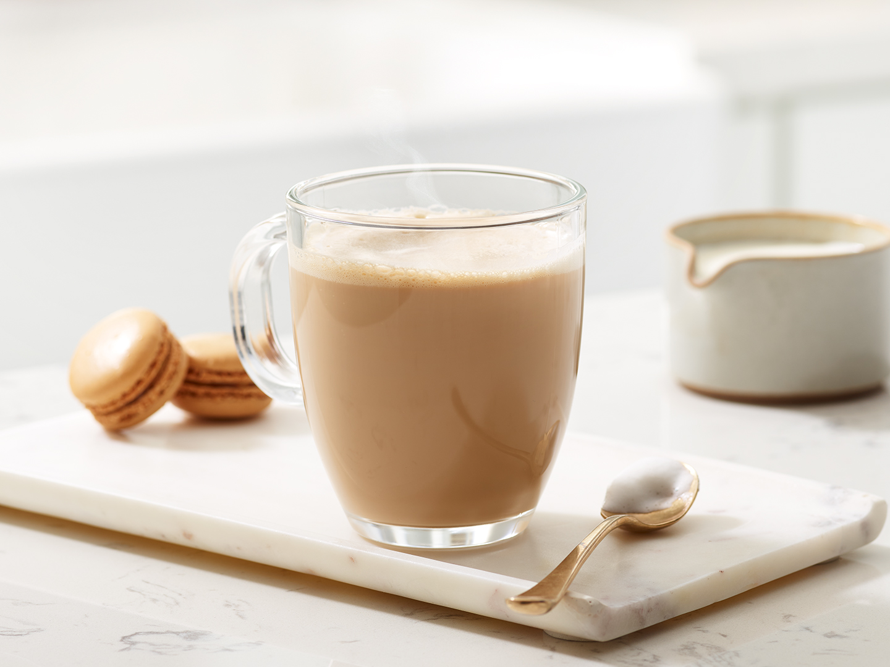

Café au Lait

Ingredients
- 30 ml espresso (or 2 shots)
- ¼ cup boiling water
- ¼ cup steamed milk
Preparation
- Pour espresso into a preheated cup.
- Add boiling water to reach half‑cup total.
- Steam milk to 65–70 °C.
- Gently pour milk over the espresso + water.
- Stir lightly, then serve hot.
- Video guide: Cafe au Lait prep.
Video from @frappetech Channel